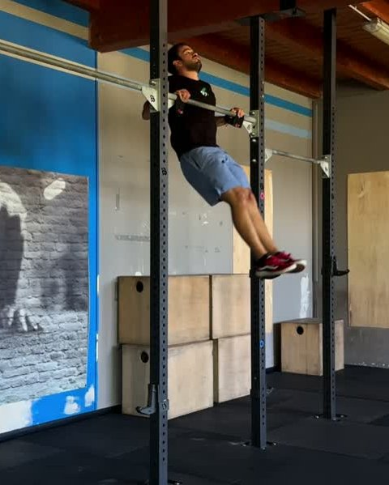
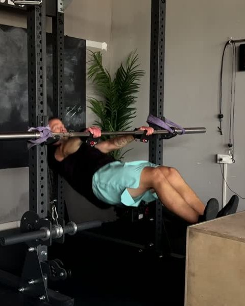
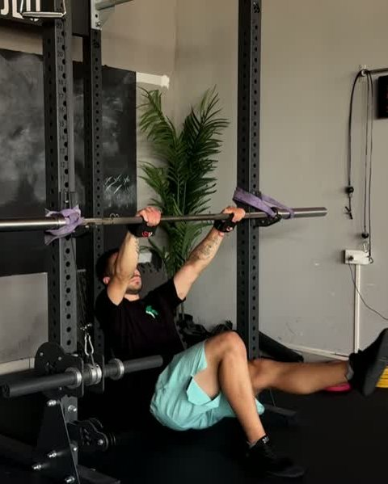
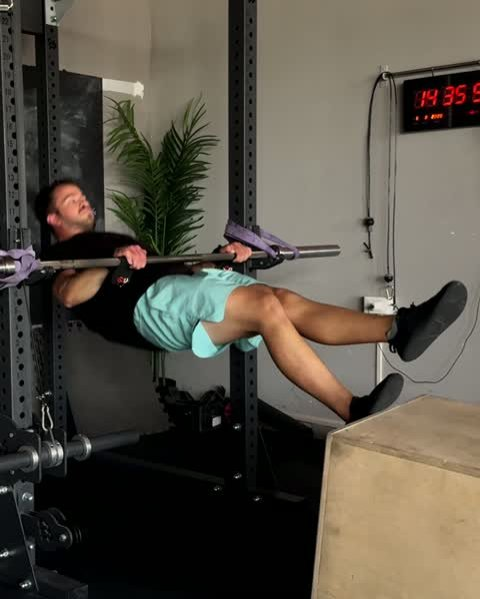
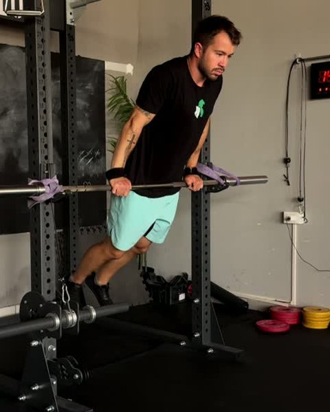
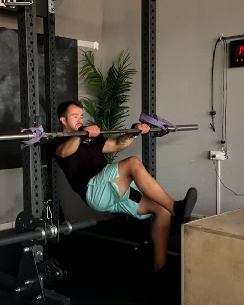
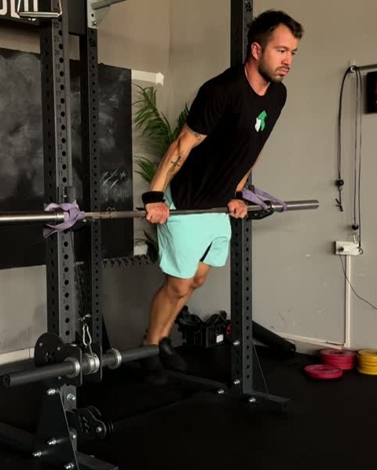
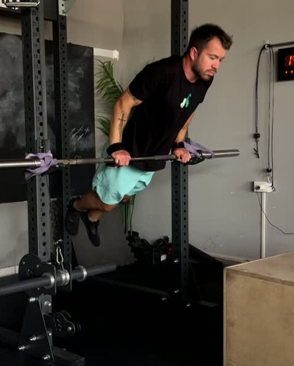

Guida gratuita
Bar Muscle Up:
da dove parti
Otto test per trovare il tuo gradino. Due giorni da alternare per salirlo.
Filipe Ramos · coach di ginnastica · @coachfiliperamos
Scarica il PDFSe tiri il bar muscle up dritto verso l'alto, la sbarra ti blocca. Il movimento prima è orizzontale e solo dopo è verticale.
Il kip manda le anche verso la sbarra, il pulldown tiene il corpo vicino, e solo allora entri sopra. Per impararlo si usa una sbarra bassa, un bilanciere sul rack, con i piedi che reggono una parte del peso. Dal gradino 1 al 4 porti le anche alla sbarra: due piedi a terra, due sul box, uno a terra, uno sul box. Dal 5 all'8 si risale la stessa scala con il muscle up intero. Questa è la scala del programma First Kipping Bar Muscle Up dell'app FAR Training.
1. Il test: trova il tuo gradino
Fai i test in ordine, riposando quanto ti serve tra uno e l'altro. Ti fermi al primo che non passi: quello è il tuo gradino. Dal test 1 al 7 basta una ripetizione fatta bene.
-

0Strict Pull Up + Kipping Chest to Bar
5 strict pull up e 5 chest to bar di fila. È il punto di partenza.
-

1Hip to Bar · due piedi sul box
1 ripetizione. Le anche vanno verso la sbarra, non verso l'alto.
-

2Hip to Bar · un piede a terra
1 ripetizione. La gamba libera calcia e aiuta il pulldown.
-

3Hip to Bar · un piede sul box
1 ripetizione. Piede più alto, il corpo più vicino alla linea del movimento vero.
-

4Muscle Up · due piedi a terra
1 ripetizione. Prima le anche alla sbarra, poi entri sopra.
-

5Muscle Up · due piedi sul box
1 ripetizione. Entri sopra e scendi basso nel dip, senza scorciatoie.
-

6Muscle Up · un piede a terra
1 ripetizione. Il calcio della gamba libera porta la forza.
-

7Muscle Up · un piede sul box
1 ripetizione. L'ultimo passo sulla sbarra bassa.
-
8
Kipping Bar Muscle Up
3 serie al massimo, 3' di recupero. Sulla sbarra alta. Ne basta uno.
Tutti gli hip to bar e i muscle up dei test 1–7 sono sulla sbarra bassa (Low Bar Kipping).
2. Cosa allenare sul tuo gradino
Quattro giorni di fila: tecnica, forza, tecnica, forza. Nel giorno di tecnica ci sono un'attivazione del pulldown, il drill della sbarra bassa e il lavoro di chest to bar. Le percentuali sono del tuo massimo di ripetizioni. Per l'Elastic Pulldown scegli un elastico che ti lasci tirare pulito ed esplosivo; per il Bench Dumbbell Pulldown un manubrio che ti sfida ma non rovina la tecnica. Sono le dosi con cui si parte nell'app. Quando il lavoro diventa facile, rifai il test del tuo gradino.
Gradino 1 · tecnica Non passi il test 1
| Esercizio | Dose | Recupero |
|---|---|---|
| Elastic Pulldown | 3 × 5 | 30" |
| Hip to Bar · due piedi a terra | 5 × 3 | 45" |
| Kipping Chest to Bar | 3 × 30% | 1' |
Gradino 2 · tecnica Non passi il test 2
| Esercizio | Dose | Recupero |
|---|---|---|
| Elastic Pulldown | 3 × 5 | 30" |
| Hip to Bar · due piedi sul box | 5 × 3 | 45" |
| Kipping Chest to Bar | 3 × 40% | 1' |
Gradino 3 · tecnica Non passi il test 3
| Esercizio | Dose | Recupero |
|---|---|---|
| Elastic Pulldown | 3 × 5 | 30" |
| Hip to Bar · un piede a terra | 5 × 3 | 45" |
| Kipping Chest to Bar | 3 × 50% | 1' |
Gradino 4 · tecnica Non passi il test 4
| Esercizio | Dose | Recupero |
|---|---|---|
| Elastic Pulldown | 3 × 5 | 30" |
| Hip to Bar · un piede sul box | 5 × 3 | 45" |
| Kipping Chest to Bar | 3 × 50% | 1' |
Gradino 5 · tecnica Non passi il test 5
| Esercizio | Dose | Recupero |
|---|---|---|
| Tucked Hollow Plate Pulldown | 3 × 10 | 30" |
| Muscle Up · due piedi a terra | 5 × 3 | 45" |
| Kipping Chest to Bar | 3 × 35% | 1' |
Gradino 6 · tecnica Non passi il test 6
| Esercizio | Dose | Recupero |
|---|---|---|
| One Leg Hollow Plate Pulldown | 3 × 10 | 30" |
| Muscle Up · due piedi sul box | 5 × 3 | 45" |
| Strict Chest to Bar | 3 × 30% | 1' |
Gradino 7 · tecnica Non passi il test 7
| Esercizio | Dose | Recupero |
|---|---|---|
| Hollow Plate Pulldown | 3 × 10 | 30" |
| Muscle Up · un piede a terra | 5 × 3 | 45" |
| Strict Chest to Bar | 3 × 35% | 1' |
Gradino 8 · tecnica Non passi il test 8
| Esercizio | Dose | Recupero |
|---|---|---|
| Hollow Plate Pulldown | 3 × 10 | 30" |
| Muscle Up · un piede sul box | 5 × 3 | 45" |
| Strict Chest to Bar | 3 × 45% | 1' |
Gradini 1–5 · forza Il giorno dopo la tecnica
| Esercizio | Dose | Recupero |
|---|---|---|
| Elastic Pulldown | 3 × 5 | 30" |
| Bench Dumbbell Pulldown | 3 × 8 | 1' |
| Strict Pull Up (gradino 5: Strict Chest to Bar) * la % del giorno di tecnica | 3 × stessa %* | 1' |
Gradini 6–8 · forza Il giorno dopo la tecnica
| Esercizio | Dose | Recupero |
|---|---|---|
| Elastic Pulldown | 3 × 5 | 30" |
| Single Kipping Bar Pulldown | 10 × 1 | 30" |
| Bench Dumbbell Pulldown | 3 × 8 | 1' |
Il programma completo
Nell'app FAR Training ogni gradino è una fase intera: quattro giorni, la progressione delle dosi giorno per giorno, il video di ogni esercizio e il test di fase alla fine. Il programma First Kipping Bar Muscle Up arriva sull'app: segui @fartraining per sapere quando esce.
Non sai se hai passato un test? Mandami il video in DM su @coachfiliperamos e ti dico da che gradino partire.
Apri @coachfiliperamos